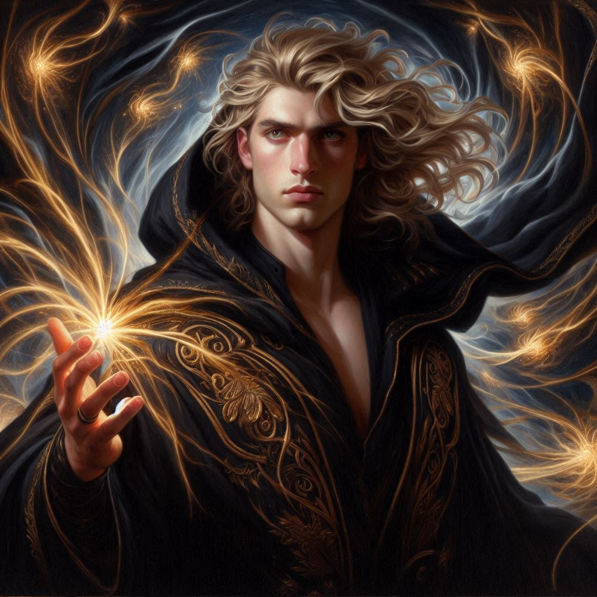
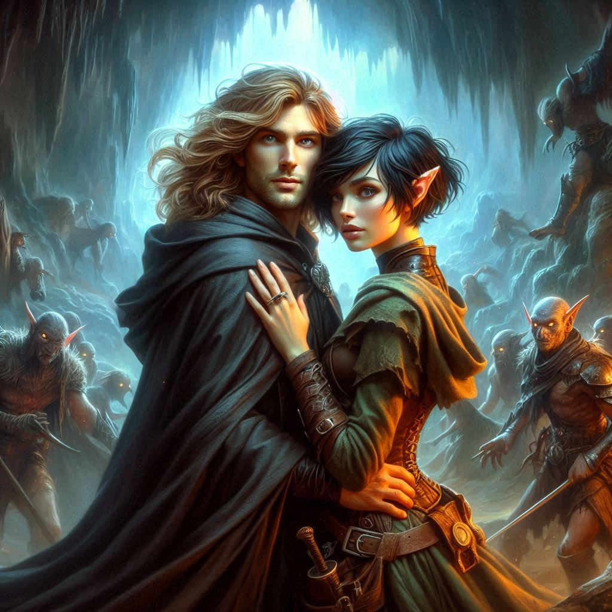
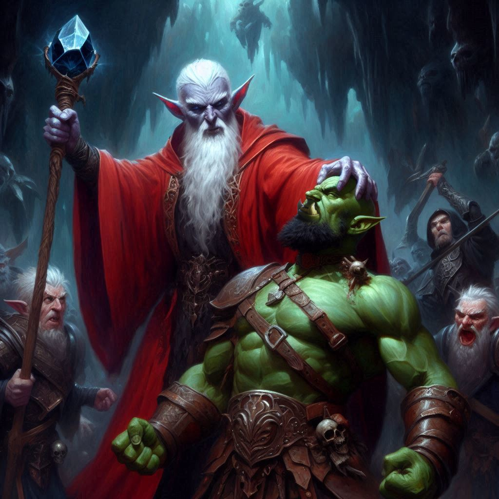

The Return of Jorsh
The cavern feels alive with tension, every breath charged with the dark energy pulsating from the obsidian shard in the Minister of Trade’s hand. His legion of dark elves stands ready, their glowing eyes fixed on you and Baider. Behind them, the portal to their twisted world flickers menacingly, feeding the ancient power that now threatens to consume everything.
Baider tightens his grip on his hammer, his face etched with resolve, but you can sense his doubt. There are too many dark elves, and the Minister’s power is growing by the second. The odds are stacked against you.
But you’re not beaten yet.
“Vyrethane.”
You whisper the summoning word Jorsh gave you in the dream, the word you swore you’d never use. As soon as the word leaves your lips, the air around you shifts—cool and electric, as though the very fabric of the cavern has changed. The ground trembles, and shadows gather at the edges of the chamber.
Then he appears.
Jorsh steps from the darkness, cloaked in swirling magic, his eyes burning with power. The dark elves hesitate, sensing the threat in him, while the Minister’s smug smile falters. Jorsh strides forward, magic pulsating around him like a storm.
“You’re too late,” the Minister growls, but there’s a flicker of uncertainty in his eyes. “You think your magic can stand against this?” He raises the shard, and the portal flares, sending waves of dark energy cascading through the chamber.
Jorsh meets the Minister’s glare, unshaken. “You’ve dug too deep, Minister. Now you’ll pay the price.”
With a surge of power, Jorsh raises his hands, sending tendrils of his magic forward. The air sizzles as his magic strikes, holding the dark elves at bay. For a moment, you dare to hope. But the Minister won’t let you off so easily.
The obsidian shard flares, and the elves surge toward you. Baider roars, charging into the fray with his hammer swinging. You follow, parrying strikes from the elves, your sword gleaming as you carve a path through them. But even with Jorsh’s magic pushing them back, the elves keep coming—relentless, lethal.
“Kira!” Jorsh’s voice cuts through the chaos, his eyes desperate as he struggles to keep his magic in check. The dark elves press in, testing his limits. “We can’t hold them off forever. Join me! Together, we can stop them. Our power combined can defeat them and destroy the portal for good!”
You glance at Baider, fighting fiercely by your side, but Jorsh’s plea tugs at something deep inside you. You’ve always had feelings for him—buried beneath your duty, beneath the betrayal. And now, in this moment of crisis, you realize what he’s offering you isn’t just survival. It’s strength. It’s power.
Jorsh’s magic begins to falter, the dark elves pressing harder against his defenses. His knees buckle, sweat pouring down his face. He’s about to fall, about to lose the battle. You don’t think—you act.
You rush to Jorsh’s side, abandoning Baider as he fights off the Minister’s legion. Without hesitation, you grab Jorsh’s face, and your lips meet his in a passionate kiss, a surge of warmth and magic igniting between you. The energy courses through your veins, intertwining with Jorsh’s power.
Suddenly, the tide turns. Your combined magic flares brilliantly, sending a shockwave through the chamber. The dark elves stumble, their advance halted. Together, you and Jorsh channel your strength, weaving your magic into a deadly force that blasts through their ranks, driving them back toward the portal.
Jorsh’s eyes burn with renewed strength, and he gives you a small, breathless smile. “With you by my side, we can reshape the world,” he whispers.
For a fleeting moment, you believe him. The two of you stand as one, your magic coiling together, unstoppable. The dark elves fall before you, their bodies thrown into the air as the magic consumes them, forcing them back into the portal from whence they came. The portal begins to close, shrinking as the last of the elves are banished.
But then, your heart seizes in terror.
From the corner of your eye, you see the Minister, obsidian shard still glowing in his hand. He’s not done yet. His gaze locks on Baider, who’s fighting off two dark elves with all his strength but is moments from being overpowered. The Minister raises his hand, dark magic gathering around him like a storm. You see it—he’s going to strike Baider down.
Your mind races. You could stay with Jorsh, finish the dark elves and close the portal for good. But if you do, Baider will die. The father who raised you, who stood by your side through everything, will fall.
“Kira!” Jorsh’s voice is full of power and urgency. “We can do this! Together! Finish this with me!”
Your heart pounds in your chest, torn between two impossible choices. Do you stay with Jorsh and end the threat of the dark elves forever? Or do you abandon him to save Baider, risking everything?
The choice looms before you. Jorsh’s hand reaches for yours, but your eyes flicker to Baider, struggling under the weight of the Minister’s magic.
This moment will decide everything.